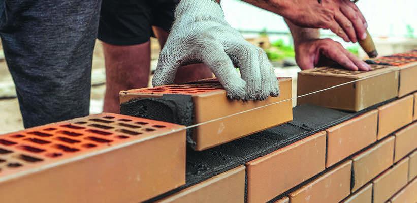
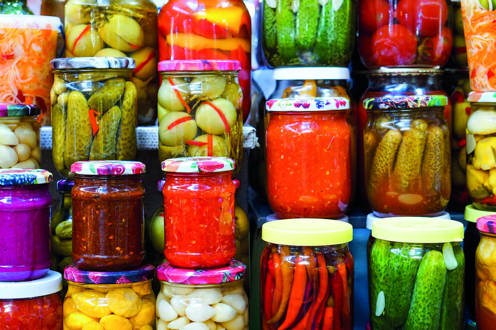
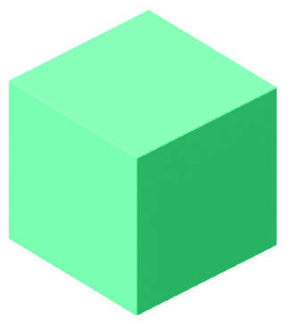
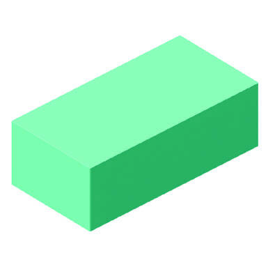

PRATICANDO
1)
OS TIJOLOS USADOS EM CONSTRUÇÕES TÊM O FORMATO DE UM BLOCO RETANGULAR.
QUAIS OUTROS OBJETOS QUE VOCÊ CONHECE TÊM ESSE MESMO FORMATO?
1) Resposta pessoal.
Espera-se que os estudantes mencionem caixa de sapato, caixa de creme dental, geladeira, prédios, entre outros exemplos.

DEDMITYAY/SHUTTERSTOCK
2)
EM SUA OPINIÃO, POR QUE É MAIS COMUM ENCONTRAR EMBALAGENS DE PRODUTOS COM FORMATO PARECIDO COM O CILINDRO DO QUE COM O CONE?

MATUSHCHAK ANTON/SHUTTERSTOCK
OS POTES DE CONSERVAS E DE OUTROS ALIMENTOS TÊM FORMATO CILÍNDRICO.
Resposta pessoal.
Espera-se que os estudantes respondam que os cilindros são fáceis de empilhar.
3)
OBSERVE OS DOIS BLOCOS RETANGULARES A SEGUIR E CITE UMA CARACTERÍSTICA QUE ELES TÊM EM COMUM.
DEPOIS, CITE UMA DIFERENÇA ENTRE ELES.

CUBO

BLOCO RETANGULAR
VALÉRIA REZENDE
REPRESENTAÇÃO ESQUEMÁTICA DE UM CUBO E DE UM BLOCO RETANGULAR.
Resposta pessoal.
Espera-se que os estudantes respondam que um dos blocos tem todas as medidas iguais, e o outro não.
Ambos os blocos têm superfícies planas.
4)
PROCURE AO SEU REDOR OBJETOS QUE LEMBREM FORMATOS RETANGULARES E FAÇA UMA LISTA NO CADERNO.
Resposta pessoal.
Possibilidades de resposta: tampos de mesa, capa de livro, quadro de giz etc.
Práticas de Alfabetização e de Matemática